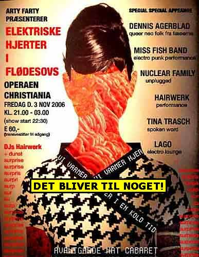

Nu kan du købe dunst cd'en online her for kun 50 kr. + forsendelse.
Nu kan du købe dunst cd'en online her for kun 50 kr. + forsendelse.| dunst | Nyhedsbrev |
| København - 2. November 2006 | |
| Kusse Prut og Snore Nosser klister |
|
Her kommer en lille hilsen fra dunst til dig. Vores DJ's, Performere & Aktivister Laver tis hele tiden. Kom og lugt til det. |
| dunst Recommends: | 3. November - 2006 |
|
 |
|
| Nu med special SNOT-drink leveret fra Tina Trasch forkølede næse. | |
| Kl. 03 tager vi ind til dunkel på Vester Voldgade ;-) | |
| dunst Recommends: | 4. November - 2006 |
| dunst CD #2 - "Shave Your Pet" | 3. Juli 2006 |
|
Nu kan du købe dunst cd'en online her for kun 50 kr. + forsendelse. |
|
| Digt af Hairwerk |
|
..Ding dong dynamo kusse.. Spreder alt for en tuse..altid våd i min trusse.. Ding dong mega nusse. Hvem var hvor da den var der? Hvem kom hen og op i birtes kjær? Blod proppen sprang med birte stadig nær.. Ælle bælle birte kjær. |
|
Hvis du vil leve et kedeligt liv uden dunst så afmeld dunst Nyhedsbrev på forsiden af www.dunst.dk |